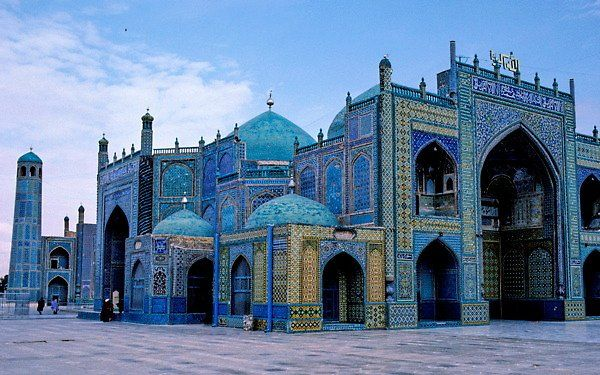
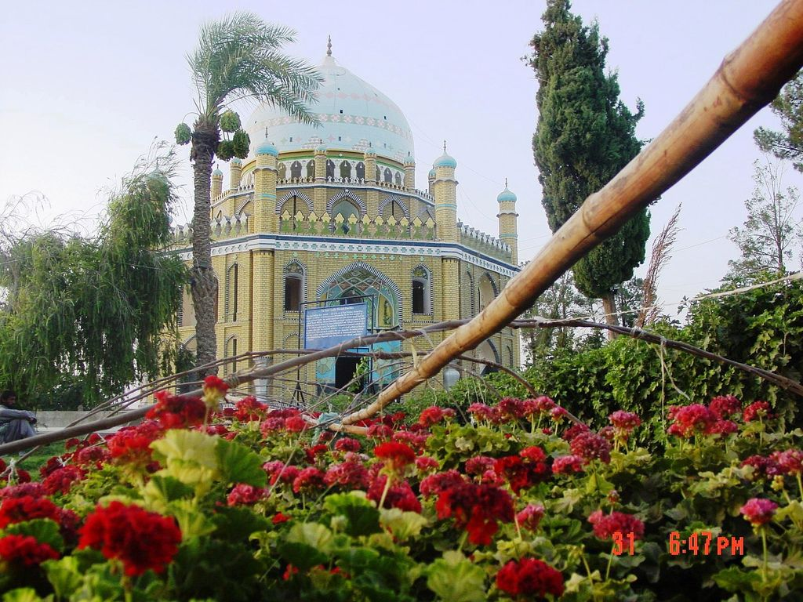
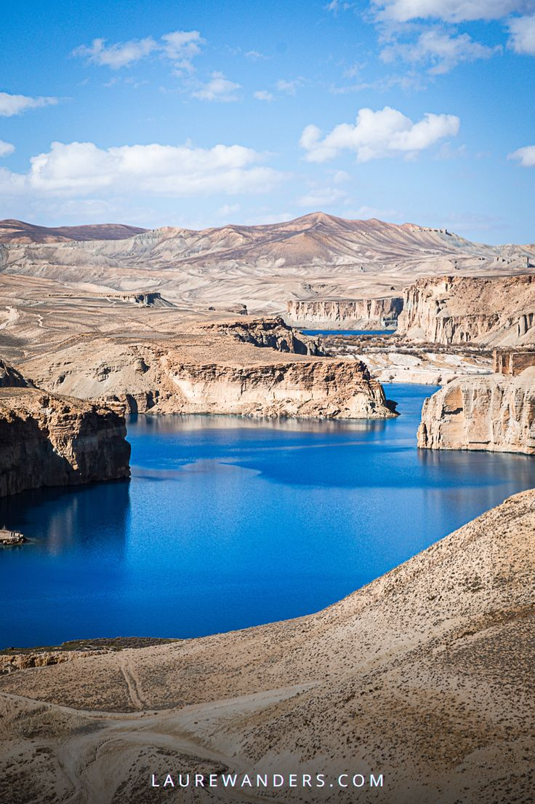

City Gallery
Mazar-i-Sharif
Home of the Blue Mosque.
Kandahar
Known for traditional clothing styles.
Bamyan
Famous for ancient Buddha statues.
Jalalabad

Renowned for citrus fruits and gardens.
Afghanistan’s cities each tell a unique cultural story—from poetry in Herat to cuisine in Kabul. This showcase highlights traditions, food, and art across the country.
Known for vibrant bazaars and traditional kebabs.
Famous for poetry, art, and historic architecture.
Home of the Blue Mosque.
Known for traditional clothing styles.
Famous for ancient Buddha statues.
Renowned for citrus fruits and gardens.
🎨 Known for poetry and art
🍲 Famous for Herati cuisine
🏛️ Historic citadel and mosques